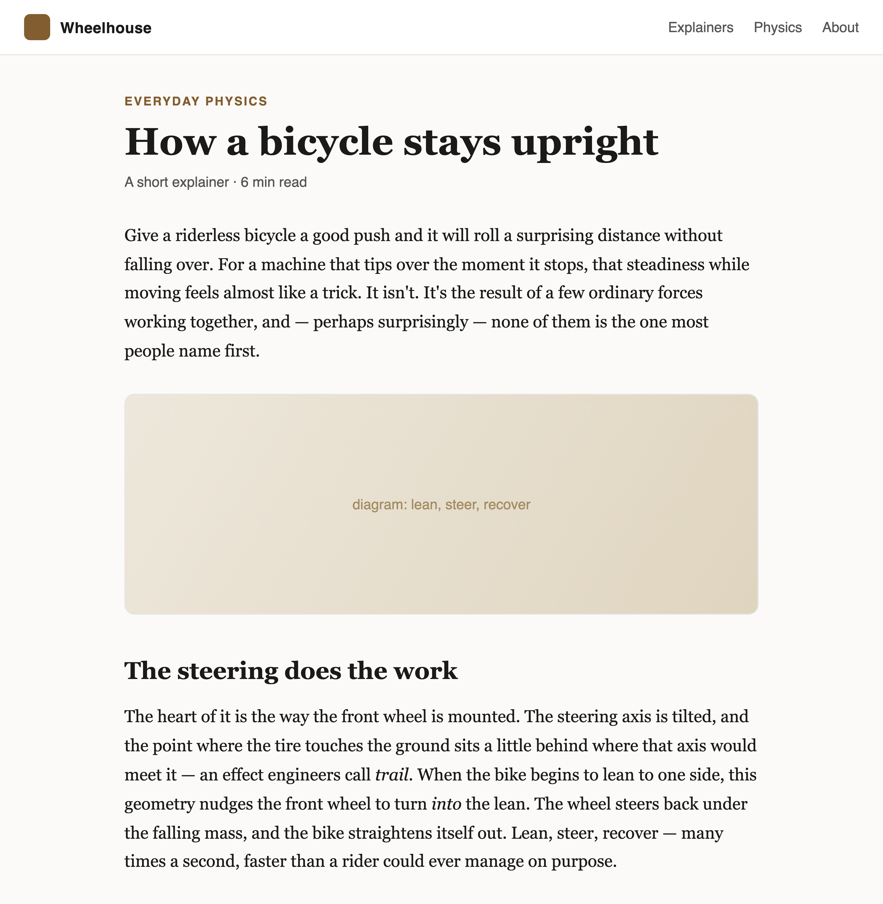

For Chrome & Brave · macOS
One conversation that follows you across the web.
Sidecar lives in your browser's side panel and keeps a single thread as you move from page to page — ask about what you're reading, the video you're watching, or anything on your screen, and it carries the whole conversation forward. Answered by the AI agent you already pay for.
You'll need: an Apple-Silicon Mac (M1 or newer) · macOS 13+ · Chrome or Brave · a Claude Code or Codex subscription


It follows you across pages
Start a conversation on one page and keep it going as you browse. Sidecar picks up each new page the first time you ask about it — no restarting, no copy-paste.
Text, images, and video — one thread
Ask about an article, drop in a screenshot or a PDF, then turn to a video. Every kind of content stays in the same conversation, carried forward together.
The AI agent you choose
Runs on your own Claude Code or Codex today — your subscription, your sign-in — and is built to support more agent backends over time.